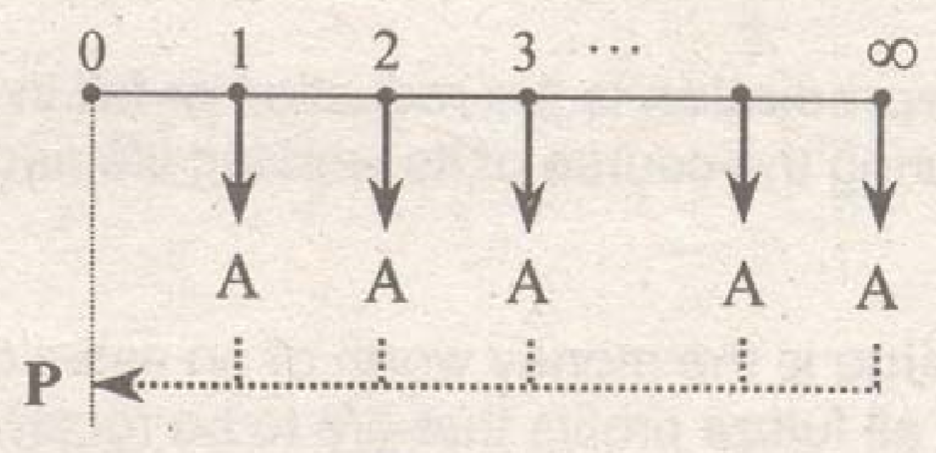

Annuity is defined as a series of equal payments occuring at equal interval of time. When an annuity has a fixed time span, it is known as annuity certain. The following are annuity certain:
Ordinary annuity is a type of annuity where the payments are made the end of each period beginning on the first period.
Sum of ordinary annuity
$$F=\frac{A\left | (1+i)^{n}-1 \right |}{i}$$
Present worth of ordinary annuity
$$F=\frac{A\left | (1+i)^{n}-1 \right |}{i(1+i)^{n}}$$
where: P = principal, i = interest per period, n = number of periods, A = uniform payment
When an annuity does not have a fixed time span but continues indefinitely, then it is referred to as a perpetuity. The sum of a perpetuity is an infinite value.
Present worth of a perpetuity:
$$P=\frac{A}{i}$$
where:
A = uniform payment
i = interest per period
Capitalized cost of a property refers to the sum of its first cost and cost of perpetual maintenance. Thus,
$$\text{Capitalized cost}=\text{first cost}+\text{cost of perpetual maintenance}$$
Bond is a long-term note or a financial security issued by businesses or corporation and guaranteed on certain assets of the corporation or its subsidiaries. Bonds are repayable on maturity and bear a fixed nominal rate of interest.
Bond rate refers to the rate of interest that is quoted in the bond.
Bond value is the present worth of the future payments that will be received.
$$V_{n}=P_{1}+P_{2}$$
$$V_{n}=\frac{C}{(1+i)^{n}}+\frac{Fr\left | (1+i)^{n}-1 \right |}{i(1+i)^{n}}$$
Where:
$V_{n}$ = value of the bond n periods prior to redemtion
C = redemption or amount at maturity (usually equal to F)
F = par value of the bond
n = number of periods prior to redemption
i = bond yield interest per period
r = bond rate per interest period
Depreciation is the reduction or fall in the value of an asset or physical property during the course of its working life and due to passage of time.
Value is the money worth of an asset or product. It also refers to the present worth of all future profits that are to be received through ownership of a particular property.
Market value is the amount a willing buyer will pay to a willing seller for a property where each has equal advantage and neither one of them is under the compulsion to buy or sell.
Book value is the worth of the property as reflected in the book of records of the company.
Use value is the amount of the property which the owner believed to be its worth as an operating unit.
Fair value is the worth of the property determined by a disinterested person in order to establish an amount which is fair to both the buyer and the seller.
Salvage value the amount obtained from the sale of the property. This is also known as resale value. Salvage value implies that the property will still be use for the purpose it is intended.
Different methods of computing depreciation of a property:
$$d=\frac{C_{0}-C_{n}}{n}$$
where:
$C_{0}$ = first cost
$C_{n}$ = value after n years (salvage value or scrap value)
n = life of the property
$$C_{m}=C_{0}-D_{m}$$
where:
$D_{m}$ = total depreciation after "m" years
$D_{m}$ = d(m)
$$d=\frac{\left ( C_{0}-C_{n} \right )}{(1+n)^{n}-1}$$
$$D_{m}=C_{0}-C_{m}$$
where:
$D_{m}$ = total depreciation after "m" years
$D_{m}=\dfrac{d\left | (1+i)^{n}-1 \right |}{i}$
Use the Matheson Formula:
$$k=1-\sqrt[n]{\frac{C_{n}}{C_{o}}} \ \ \ \ \ \text{or} \ \ \ \ \ k=1-\sqrt[m]{\frac{C_{m}}{C_{o}}}$$
Note: This method is not applicable if the salvage or scrap value is zero.
$$\Sigma_{\text{years}}=\frac{(n)(n+1)}{2}$$
$\text{First year:} \ \ \ \ \ d_{1}=\left ( C_{0}-C_{n} \right )\dfrac{n}{\Sigma_{\text{years}}}$
$\text{Second year:} \ \ \ \ \ d_{2}=\left ( C_{0}-C_{n} \right )\dfrac{n-1}{\Sigma_{\text{years}}}$
$\text{Third year:} \ \ \ \ \ d_{3}=\left ( C_{0}-C_{n} \right )\dfrac{n-2}{\Sigma_{\text{years}}}$
And so on...
Break-even refers to the situation where the sales generated (income) is just enough to cover the fixed and variable cost (expenses). The level of production where the total income is equal to the total expenses is known as break-even point.
Break-even chart is a diagram which shows relationship between volume and fixed costs, variable costs, and income. The following is an example of a break-even chart.
The legal forms of business organizations are the following: